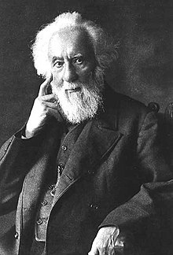
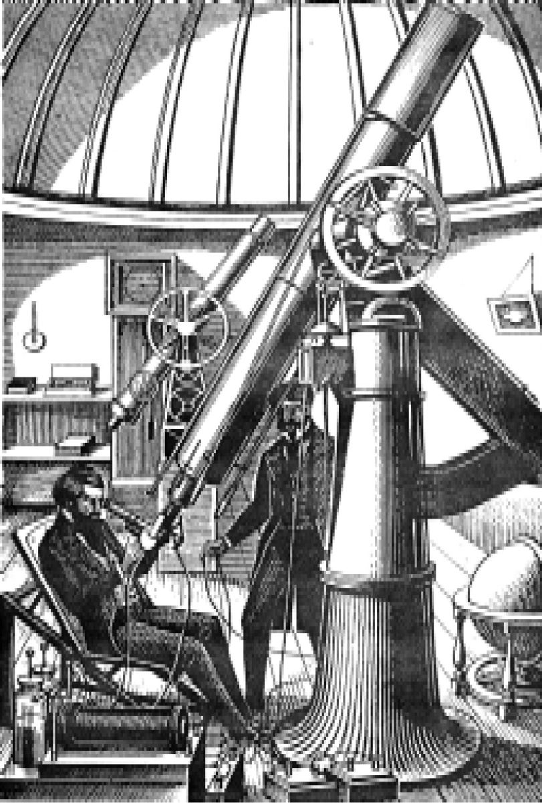

Kirchhoff đã đưa ra cách phân tích ánh sáng của Mặt trời, hành tinh và sao. Nhưng đối với William Huggins(1) nhà thiên văn nghiệp dư người Anh sống tại Tulse Hill gần London, công việc này là một nguồn cảm hứng. Ông nhiệt tình kêu lên:
- Đây là cách để vén lên bức màn mà trước đây chưa hề được vén! Bây giờ mình sẽ bắt đầu phân tích các sao.

Tuy nhiên, ông biết rằng cần phải tìm hiểu thêm về phân tích quang phổ trước khi ông có thể làm được điều này. May thay, một người bạn và là người láng giềng của ông là một chuyên gia phân tích quang phổ trong phòng thí nghiệm. Người bạn này là William Allen Miller, giáo sư hóa học tại Đại học King ở London.
Vào một tối mùa đông tháng Giêng 1862, Huggins đi nghe Miller thuyết trình đề tài này ở London. Sau đó hai người thuê một xe ngựa đưa họ trở về Tulse Hill. Khi con ngựa chạy nước kiệu qua các đường phố im ắng của London rồi ra miền đồng quê, Huggins nói với Miller về kế hoạch của mình:
- Tối nay, ông hãy mô tả các phương pháp của Kirchhoff. Tôi muốn áp dụng chúng để phân tích ánh sáng sao. Ông giúp tôi được chứ?
Miller đáp:
- Nghe ra có vẻ là một việc làm táo bạo. Đây là điều chắc chắn tôi sẽ giúp.
Lúc xe ngựa về đến nhà số 90 Upper Tulse Hill, họ bắt đầu thực hiện kế hoạch. Huggins hăm hở nói:
- Mời ông vào và xem các thiết bị của tôi.
Kề ben ngôi nhà là đài quan sát riêng của ông. Đấy là một kiến trúc không lớn với một mái vòm đường kính 3,6m, bên trong có vài kính viễn vọng khá nhỏ. Cái tốt nhất là kính viễn vọng khúc xạ quay bằng đồng hồ cơ học, với một vật kính đặc biệt được làm ra bởi Avan Clark, nhà chế tạo thấu kính người Mỹ có tiếng. Huggins hãnh diện nói:
- Chúng ta sẽ dùng kính viễn vọng này, nhưng cần phải lắp vào nó một kính quang phổ. Ông có kính quang phổ nào vừa với nó không?
Miller lắc đầu nói:
- Chẳng có gì liên quan đến công việc này cả. Không ai có kính quang phổ vừa với nó. Chúng ta sẽ phải thiết kế một kính quang phổ để tương thích với nó
Ông trầm ngâm chăm chú nhìn quanh đài quan sát nhỏ bé rồi nói thêm:
- Chúng ta sẽ phải nhận dạng các quang phổ sao bằng cách so sánh chúng với quang phổ của các hóa chất có trên Trái đất. Tôi sẽ dựng tạm một máy phát tia lửa điện để tạo ra sự so sánh các quang phổ.
Hai ông nhanh chóng bắt tay vào thiết kế và thu thập các thứ cần thiết cho máy phát tia lửa điện.Huggins là một người độc thân giàu có, bỏ ra nhiều ngày đi khắp London cố sức nài ép các nhà chế tạo dụng cụ. Một hôm, Miller mừng rỡ bước vào với một cuộn dây cảm ứng to tướng và các dãy acquy để phát tia lửa điện. Bằng cách so sánh tia lửa giữa các kim loại khác nhau, ông có thể thu được quang phổ của các kim loại ấy. Với các quang phổ này, ông sẽ so sánh với các quang phổ trong ánh sáng sao.
Cuối cùng, mọi thứ đã được lắp ráp và chiếc kính viễn vọng khúc xạ Clark, với kính quang phổ gắn ở thị kính, được đưa vào hoạt động. Hugins ngồi bên chỗ điều khiển kính viễn vọng, Miller lo phần máy phát tia lửa điện. Đối với mỗi sao, họ lần lượt kiểm tra các vạch bằng cách so sánh chúng với một quang phổ tự tạo.
Để thử các phương pháp, họ bắt đầu bằng một quan sát tổng quát. Họ thấy rằng có nhiều nguyên tố kim loại chắc chắn hiện diện trong các sao, cũng như chúng hiện diện trong Mặt trời. Ngày 19 tháng Hai 1863, họ gửi một báo cáo về kết quả sơ bộ cho Hội Hoàng gia.
Kế hoạch tiếp theo là phân tích một hoặc hai sao càng đầy đủ càng tốt. họ quyết định tập trung vào hai sao đỏ nổi bật Betelgeuse và Aldebaran, và một sao rất sáng là Sirius.
Đêm này sang đêm khác, họ cặm cụi trong đài quan sát nhỏ và cố sức nhận dạng các vạch quang phổ mờ nhạt. Đây là công việc cực kỳ khó khăn: không khí luôn luôn nhiễu loạn và các vạch thường nhảy múa trươc mắt họ cho tới khi họ cảm thấy muốn từ bỏ việc quan sát.
Tuy nhiên, họ vẫn kiên trì tiếp tục nhìn vào kính quang phổ, phát tia lửa điện tạo ra quang phổ so sánh, rồi nhìn vào quang phổ sao. Họ cũng thử dùng các thiết bị chụp ảnh thô sơ hiện có lúc bấy giờ, khao khát xác định rõ các vạch chập chờn chư true ngươi trước mắt họ. Họ nghĩ, nếu chụp ảnh được thì họ có thể xem xát các quang phổ sao lúc nhàn rỗi. nhưng họ chẳng mấy thành công trong việc này và phải dựa vào đôi mắt.

.Sau một năm, họ đã thành công trong việc nhận dạng một số kim loại trong mỗi sao mà họ chọn. Sao Betelgeuse có năm kim loại: natri, sắt, canxi, magie và bismuth. Sao Aldebaran cũng có các kim loại này, ngoài ra còn có telu, antimon và thủy ngân. Sao Sirius chỉ có ba kim loại là natri, sắt và magie, nhưng họ phát hiện trong nó cũng có hydro. Tháng Tư năm 1864, hai ông thông báo:
- Mặc dù có sự thay đổi về các nguyên tố trong các sao, nhưng tất cả chúng đều được cấu trúc trên cùng một quy hoạch hóa học như hệ Mặt trời.
Nhìn vào không gian xa hàng tỉ km, họ phát hiện một số nguyên tố rất giống các nguyên tố hiện diện trên Trái đất.
Sau đó Miller trở về với phòng thí nghiệm của ông ở Đại học King, còn Huggins tiếp tục làm việc một mình. Cuối tháng Tám, họ quyết định khảo sát một tinh vân. Các nhà thiên văn vẫn chưa biết chắc liệu tất cả các vệt ánh sáng kỳ lạ này có thực sự là các hệ sao ở xa, hoặc liệu một số trong chúng là các đám mây khí khổng lồ chiếu sáng.
Huggins nhận ra rằng kính quang phổ đã cho ông một cách phát hiện mới. Cá hệ sao thường tạo ra một quang phổ hoàn toàn đầy đủ các vạch sẫm. Một chất khí chiếu sáng sẽ cho thấy một quang phổ đơn giản chỉ với các vạch sáng chói đối với chất khí đó.
Ngạc nhiên và hồi hộp, Huggins hướng kính viễn vọng đến một tinh vân tròn trong chòm sao Draco (Thiên Long). Tất cả những gì ông thấy là một vạch sáng chói đơn độc. Tinh vân là một khối khí. Giờ đây, ông xoay kính viễn vọng khúc xạ 20,3cm hướng vào đại tinh vân trong chòm sao Orion (Tráng sĩ), tinh vân mà Herschel đã mô tả như là một đốm trắng mù sương. Nó cũng là một khối khí. Ông thắc mắc:
- Liệu các sao sẽ dần dần đặc lại từ các đám mây khổng lồ này chăng?
Nếu đúng như vậy, thì từ đài quan sát nhỏ này ông có thể nhìn vào nơi phát sinh của hàng ngàn sao. Đây là một sự nhìn cảm hứng, nhưng Huggins không thể chứng minh được nó. Ngày nay, các nhà thiên văn cho là ông nghĩ đúng.
Trong những năm tiếp theo, Huggins tiếp tục khảo sát các tinh vân khác. Đến năm 1868, ông đã kiểm tra quang phổ của 70 tinh vân nữa, 1/3 trong số đó hóa ra là các khối khí. Tuy nhiên, số còn lại có các quang phổ sao dài và phức tạp, vì vậy ông biết rằng chúng là các hệ sao rất lớn. Ông cũng chứng minh là có hai loại tinh vân.
Sử dụng ánh sáng, Huggins đã thành công trong việc phân tích hóa học trên quy mô vũ trụ thực sự, nhưng ông biết rằng ánh sáng cũng mang loại thông tin khác. Năm 1842, một giáo sư vật lý người Áo có tên là Christian Doppler đã tiên đoán rằng ánh sáng xuất phát từ một sao sẽ bị thay đổi bởi vận tốc và chuyển hướng chuyển động của sao ấy.
Loại hiệu ứng mà ông nghĩ xuất hiện với âm thanh, các nguyên lý ông đưa ra chủ yếu giải quyết bằng âm thanh. Chúng ta nghe được sự thay đổi trong âm vực của còi tàu hỏa khi nó chạy ngang qua, sự thay đổi này gây ra bởi chuyển động của tàu hỏa. Âm vực của còi nghe chói tai hơn khi tàu đến gần và nhỏ dần khi tàu đi xa. NGuyên nhân là âm thanh di chuyển dưới dạng sóng: sóng dài bứt nguồn từ âm thanh trầm và sóng ngắn bắt nguồn từ âm thanh cao. Khi tàu chạy đến gần, chuyển động của nó tạo ra các sóng ngắn hơn và âm thanh cao hơn. Khi tàu chạy xa dần, các sóng bị kéo ra dài hơn và âm thanh trở nên nhỏ hơn. Doppler lập luận rằng nếu một sao đang chuyển động đủ nhanh, ánh sáng của nó sẽ đổi màu vì một loại nguyên nhân giống như vậy. Ngày nay, chúng ta biết rằng với vận tốc rất cao, sự thay đổi màu này vẫn xảy ra.
Với vận tốc chậm hơn thì không nhìn thấy sự thay đổi màu, trong toàn bộ ánh sáng của sao, nhưng có sự xê dịch trong sắp xếp của các vạch quang phổ. Năm 1848, nhà vật lý người Pháp Armand Hippolyte Fizeau chỉ ra rằng vận tốc càng cao thì sự xê dịch càng lớn. Vậy thì, đây là một cách để hình dung ra vận tốc mà tại đó một sao đang chuyển động. Fizeau cũng nói rằng hướng của sự xê dịch sẽ phụ thuộc vào hướng chuyển động của sao. Nếu sự xê dịch hướng về phần xanh dương, có nghĩa là sao đang tiến tới dần. Nếu sự xê dịch hướng về phần đỏ, có nghĩa là sao đang lùi xa dần.
Sau khi thành công với tinh vân, Huggins chuyển sang tìm cách đo các xê dịch quang phổ. Vấn đề trước tiên của ông là phải quyết định vạch nào là vạch qung phổ tốt nhất để dùng như là điểm quy chiếu.
Để giải quyết vấn đề, ông viết thư cho nhà vật lý nổi tiếng người Scotland là James Clerk Maxwell để xin lời khuyên. Maxwell nói với ông hãy tập trung vào vạch F của hydro.
Mùa xuân năm 1868, nhà thiên văn nghiệp dư không biết mệt mỏi hướng kính viễn vọng vào sao Sirius một lần nữa. Ông thận trọng điều chỉnh các vít của thước panme để thước chỉ ra bất cứ sự thay đổi nào trên vạch F. Giờ này sang giờ khác, nỗ lực của ông gặp phải lúng túng bởi nhiễu loạn trong không khí khiến các vạch phổ chập chờn. Giờ này sang giờ khác, ông vật lộn để giữ khe hở của kính quang phổ, chỉ rộng 0,08mm, để kính hướng chính xác vào sao này. Mặc dù được quay bởi đồng hồ cơ học, nhưng kính viễn vọng thường xuyên cần sự điều chỉnh nhỏ.
Bất chấp những khó khăn lớn, rốt cuộc Huggins cũng thành công. Kích thước của sự thay đổi cực kỳ nhỏ, nhưng nó chỉ ra một vận tốc rất lớn. Ông nhẩm tính:
- Sao Sirius đang chuyển đọng xa dần với vận tốc khoảng 48km/ giây, tức gần 173.000km/giờ.
Ngày 23 tháng Tư, ông gửi bức thư ngắn viết trị số này cho Hội Hoàng gia. Sau đó, ông sửa lại trị số, rút nó xuống còn khoảng 34km/ giây. Trị số này gần giống với trị số ngày nay.
Huggins tiếp tục đo các xê dịch quang phổ. Ông thấy rằng các sao đang chuyển động nhanh theo một cách lộn xộn và ngẫu nhiên. Tuy được gọi là “ sao cố định” và xuất hiện đối với mắt thường, nhưng thật ra chúng hoàn toàn khác về cách hoạt động, thậm chí khác lẫn nhau. Một số sao, chẳng hạn Betelguese, Rigel, Castor và Regulus đang lùi xa dần. Một số sao khác, kể cả Arcturus, Pollux và Vega, đang tiến tới. Tất cả chúng đều di chuyển với vận tốc đáng sợ, tuy vận tốc này dường như nhỏ bởi vì các sao ở quá xa.
Vẫn thử dùng cách chụp ảnh, ông xoay xở để ghi lại các thay đổi này bằng một máy ảnh. Cuối cùng, năm 1876, với sự trợ giúp của các kỹ thuật được cải tiến, ông có được một bức ảnh quang phổ của sao Vega. Sau đó, ông tìm cách để chụp ảnh nhiều quang phổ nữa.
Bằng cách sử dụng phân tích quang phổ, một kỷ nguyên mới bắt đầu trong lịch sử ngành thiên văn. Các kỹ thuật chụp ảnh quang phổ được nhanh chóng cải tiến. Một người Mỹ tên là Henry Draper ghi lại 78 quang phổ khác nhau từ năm 1879 đến năm 1882. Năm 1886, Edward Charles Pickering và những người công sự của ông tại đài thiên văn của Đại học Harvard bắt đầu thực hiện một cuộc khảo sát đầy đủ về các sao ở bầu trời phía bắc. Đến năm 1890, một đài thiên văn mới Harvard xây dựng ở Peru cũng được dùng để quan sát các sao ở bầu trời phía nam. Ngày nay, có trên 15.000 vận tốc sao được biết đến, 360.000 sao được liệt kê tùy theo loại ánh sáng mà chúng phát ra. Với phân tích quang phổ, người ta có thể tìm ra tính chất hóa học của tất cả các sao này.
Nhưng nghiên cứu về ánh sáng sao đòi hỏi con người phải làm nhiều hơn là nói về cơ cấu hóa học của các sao, người ta phải mở ra những cách mới để đo vũ trụ.
Đến năm 1900, tiêu chuẩn so sánh duy nhất được các nhà thiên văn biết đến là thị sai, phép đo này do Bessel sử dụng. Với phép đo thị sai, các khoảng cách đến khoảng 5.000 sao đã được tính toán tỉ mỉ. Tuy nhiên, số sao này chỉ là một phần rất nhỏ trong những sao nhìn thấy. Ngoài ra, tất cả chúng đều là các sao tương đối gần, bởi vì phép đo thị sai không thể dùng đối với sao ở xa hơn. Vì vậy, cá nhà thiên văn tìm cách khác để đo khoảng cách lớn hơn của sao.
Cuối cùng, vào năm 1912, bà Henrietta Swan Leavitt, con gái của một mục sư, có một phát hiện dẫn đến một cuộc cách mạng phép đo khoảng cách. Phát hiện này liên quan đến các sao kỳ lạ gọi là sao biến quang(2) co giãn.
Chú thích:
(1) William Guggins (1824-1910). Nhà thiên văn nghiệp dư người Anh, có đài quan sát riêng gần London. Ông là người tiên phong trong phương pháp phân tích các phổ tạo ra bởi ánh sáng của sao. Từ kết quả của công trình nghiên cứu, ông chứng minh rằng các sao có cùng cấu tạo với các nguyên tố hóa học được tìm thấy trên Trái đất. Ông cũng chứng minh một số tinh vân được cấu tạo từ chất khí.
(2) Sao biến quang. Sao có độ sáng biến thiên. Tùy theo nguyên nhân gây biến quang mà có tên gọi thích ứng: sao biến quang che khuất, sao biến quang co giãn, sao biến quang quay, sao biến quang cộng sinh, sao mới, sao siêu mới.